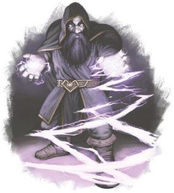

每个氏族都拥有一个尖塔的统治权，而统治氏族拥有领内所有剩余土地的权利。准确的说，氏族拥有的是土地及其地下部分统治权。在第十个世纪初时，有复数个领内的矿工闯进了地下国度。那里有用元素魔法塑形的宽阔隧道，通向用远超现代摩洛挖土机的技术所建造的宏伟大厅与地下城市。街道使用不灭明焰照明，并用环境附魔来保证空气清新和温度适宜。有些人可能认为矮人更关心建造者的命运如何，但这些古老的大厅完全空置，没有遗留下来的血痕或骸骨。对于发现者来说，这些空荡荡的大厅并不是什么凶兆，而是来自天命诸神的礼物，一个等待居民的奇妙国度。
氏族领袖们起初谨慎推进开发，但他们很快就被更多的神奇发现所吸引。古代铸造所中保存着有希望被重新找回的失落技术。探险者们只是在大街上捡拾，就能带回金银饰品。那里也有矿井――更安全，规模更大，但仍然蕴藏着丰富矿藏的矿井。随着时间的失衡，探险家开始意识到一些最矿藏最丰富的矿脉并非自然产物――有些矿井会连接到不适用现实规则的半位面，例如翡翠会像苔藓一样生长的矿脉。这也可以被解读成一个警告，但此时氏族统治者们已经被奇迹和机遇蒙蔽了双眼。考查队进驻地下国度较浅层的区域，在这里建立了定居点。矿工开始在古代矿井中工作，而铁匠则将一些失落的铸造厂恢复功能。
一时间，这看上去是一个黄金时代。然而不知怎么的，黄金时代结束了。其原因可能是冒险者和探险家为了寻找更大宝藏而过分深入。也可能是Dyrrn和他的爪牙一直在关注摩洛人的扩张，等待地下定居点的平民人口达到临界水平。一开始，斥候带来了新发现的隧道和房间覆盖着不自然的液体以及蘑菇园中生长着奇怪东西的报告。随后，派出的斥候有去无回，同时由狰狞异变怪小队开始了第一波攻击。锁喉怪潜伏在阴影中。索多拉克领面临嚎叫着的迪洛矮人（他们可能是失落的氏族――诺兰领的幸存者）集群的冲击。奇怪的瘟疫和致命的泥怪开始从沦陷的隆杜拉克定居点中蔓延开来。那段时期充满了恐惧，但也带来了一致的决断：无论这个未知的威胁是什么，都必须不惜一切代价地将它封印在地下深处。
军队被集结起来，各氏族将最优秀的士兵派往地下深处，而每个公民都接受了使用斧头和锤子的训练，以应对狰狞异变怪的突袭或更出人意料的针对的地表的袭击。尽管有些氏族考虑过撤军，但矮人内心深处的骄傲与对财富和奇物的渴望还是驱使着他们不断战斗。他们相信，如果没有将异怪控制在地下深处，他们就会涌上地表。接下来的数年是一个充满恐惧和不确定性的时期。当一种恐惧之源开始能够控制住时，就会出现更大的恐惧之源。新的威胁以惊人的频率出现；最常见的敌人是狰狞异变怪和迪洛矮人，但没人知道何时会出现未知的新威胁。
在战争的第二个十年，有了两个重大发现。第一个是摩洛人知道了他们所面临的敌人：名为腐蚀者Dyrrn的异变魔。在943YK，灵吸怪Dyrrashar占据了索多拉克领中位于洛兰之门地下的定居点，并以灵能广播了一条被称为Dyrrn之约的讯息。以心灵感应的方式接收的此讯息并没有使用语言这一形式，因此对它的转写有许多翻译版本。但其核心内容是：“你吸引了主脑的注视。你走在污秽迷宫。一切都将改变。” 索多拉克氏族最终重新夺回了洛兰之门，并迫使Dyrrashar撤退，但这名灵吸怪将军至今仍逍遥法外，蛰伏在其他地方。接收过Dyrrn之约的人永远都不会忘记它。
虽然Dyrrn之约散播了恐惧，但也带来了充满希望的第二发现。隆杜拉克氏族在遭受巨大的损失后成功将军队撤退到地表，并为防御针对地面的攻击做足了准备――但预想中的攻击并未到来。这一情形也在其他领地和尖塔中反复出现；尽管原因尚不清楚，但Dyrrn的军队不会追击地下国度之外的敌人。
没有人知道为什么异怪军队不大举进攻地面。贤者们认为异怪与Dyrrn的监狱半位面绑定，不敢过度远离主人。但也有可能这只是一种战术。无论真相如何，战争在之前的数年中一直处于僵局。但有很多贤者指出，现在就自满是愚蠢的，只有完全确定Dyrrn的军队不来到地面的原因，才能知道自己的安全是否有保证。而且即使狰狞异变怪大军不会离开隧道，也没有受到大规模袭击的危险，但那狡猾的领主可能会推进更加阴损的计谋。
隆杜拉克领和托达农领已经退出了战争，将所有通向地下国度的通道驻防，并禁止一切前往地下深处的行为；他们无视了地下国度的存在，相信只要不去捅蚊蝠窝，就不会有异怪威胁到自己。大多数其他的主要氏族则在地下深处维持防线，用钢铁和鲜血捍卫自己宣称拥有的矿井和定居点。这些领土拥有足以抵抗攻击的坚固防御工事，但在防线上服役仍然是一件危险的工作。现在矮人不再试图跨过现有的防线，因为他们清楚冒险推进会让自己的命运不再有保障。
战争的前景仍不明了。许多氏族领袖希望能进一步向深处推进，但在之前的几十年里，人员的伤亡实在是惨重，而人们也仍然担心当前的僵持只是假象――Dyrrn正在为下次攻击积蓄力量。没有人知道怎么做才能稳定将战线推进一百尺，更不要说一劳永逸地赢得战争的方法了。最终还是要由DM来决定地下战争是潜在的威胁，还是战火再燃并成为故事的主题。
战争仍未结束，即使异怪没有大规模涌上地表，也并不意味着地表不会遭遇异怪。偶尔会有零星异怪来到地面；一只落单的锁喉怪可能会大肆杀戮，而一只灵吸怪可能会建立起一个矮人邪教。心灵攻击、非自然疾病等其他威胁也可能源于地下。
在之前的三十年中，Dyrrn的影响甚至触及了摩洛矮人所生的孩子。在极少数情况下，普通父母会生出与众不同的孩子，这样的孩子在出生时就带着与其绑定的独有共生体以及其他令人不安的变异和出乎意料的力量――他们被称为厄兆矮人。第6章中会提供有关厄兆矮人的更多信息（以及其在摩洛中的接受程度），以及作为种族亚种的游戏数据。
Dyrrn的影响表提供了在地下定居点或地表可能会出现的范例威胁。这些情况并不多见，而氏族士兵也总是保持警惕以应对威胁，但这些情况能够在摩洛社区中引发故事。
了解地下战争的规模是非常重要的。没人知道地下王国具体有多大，只知道它似乎横跨铁根山脉，并与凯博尔的多个半位面相连。地下王国很有可能覆盖了所有主要摩洛城市的地下，但并不是每个尖塔都突破到了地下王国的领域并与其建立了联系。在创作摩洛城市冒险时，请决定是否有通往地下王国的既有通道；如果有，是简单的通道，还是附带了地下堡垒或定居点？在一个还没有已知联系的尖塔中，可能有一个邪教正在秘密挖掘，试图接触他们的异怪主人。或者一个氏族在堡垒的地下打开了一条通道，但缺乏进行探索的勇气――这将是冒险者们的工作。
|
D8 |
事件 |
|
1 |
萦绕低语。一个社区的人们受到心灵感应低语的折磨。这些低语可能是针对邻居的恐惧或残酷想法，也可能会揭示和强化听众心中恐惧。虽然没有物理效果，但低语的蔓延会引发不和及暴力。低语可以被阻止心灵感应交流的效果（例如心灵护盾戒指）或防止生物被异怪魅惑的效果（例如防护善恶法术）阻挡。 |
|
2 |
灰水。一口井被污染或下水道系统内的某个点开始产生灰色的渗出液。 |
|
3 |
狂热。精神性诅咒在受害者心中生根发芽，驱使他们走向非理性的暴力。狂热的受害者会立即采取驱使暴力的行动。有些人会有足够的自制力来寻找现有的敌人；其他人只是简单地攻击最近惹恼他们的生物。如果受到狂热诅咒的生物用近战攻击攻击了另一个生物，目标必须通过DC10的感知豁免，否则将感染狂热。而杀死狂热感染者的生物必须通过DC15的感知豁免来抵抗感染。狂热可以被任何防止生物被异怪魅惑的效果阻挡，也可以被高等复原术移除。另外，如果受害者被拘束以阻止他们遵循暴力冲动行事，他可以在每个没有实行暴力1小时结束后进行一次DC10的感知豁免检定；成功豁免后狂热结束。 |
|
4 |
异种人格。此精神性诅咒的受害者会认为他们是一个异怪。他们试图遵循那并非天生的本能，例如杀人并摄食他们的大脑。此诅咒不会传染，但受害者可能会为了隐藏这一事实而用尽心机。高等复原术能够解除此诅咒。 |
|
5 |
邪教徒。黄泉巨龙会在当地社区扎根。超凡肉身（Transcendent Flesh）教和还魂者（Revenant）教是常见的选择（详见第三章）。邪教可以由噬脑怪或夺心魔领导，也可以是自行兴起。 |
|
6 |
新成型者。当地生物的变异产生了一种异怪。狰狞异变怪可能是两名矮人融合而成；惧噬体可能是受害者液化并混合的结果。这种生物并不需要看起来和传统的异怪很像，但可以使用标准异怪的游戏数据。 |
|
7 |
落单的猎人。一个孤独的智能异怪――噬脑怪、嶙峋异变怪、甚至是夺心魔在一个社区中移动。它可能会随机杀人，或有一个想要完成的任务。 |
|
8 |
心灵风暴。一股精神力的涡流如飓风般席卷一个社区。被困在效果区域内的生物必须通过一次成功的智力豁免，否则将受到魅影之力法术的影响。效果范围、持续时间和豁免DC取决于心灵风暴强度。一场小型风暴可以设定为DC10，影响半径20尺的范围，持续时间3轮；一场强烈的风暴可以设定为DC14，覆盖范围数百尺并持续长达1小时。和魅影之力一样，心灵风暴的效果也各不相同。有时心灵风暴的效果很奇异，但无害；例如无生命的物体可能会融化或移动，时间会倒退或变慢。但心灵风暴也能以一群狰狞异变怪的攻击这一形式出现，由于魅影之力的效果，这些攻击可能是致命的。 |
对于外人来说，进入地下国度的想法可能会显得很疯狂，但仍有几个因素推动着摩洛领保持在地下的存在。首先是对地下奇宝的渴望。古代矮人拥有制作传奇物品和神器的能力。他们甚至以连达坎人都没有掌握的方式探明了凯博尔的半位面系统；许多氏族领袖梦想着拥有在自然界无法找到的无底矿产或资源。除了对前述东西的固有渴望之外，对于摩洛人来说，这还是个荣誉问题。地下国度（Sol Udar）是他们祖先的杰作。其中包含的知识以及不可估量的财富都是他们应得的遗产。这一存在强烈的提醒着他们可以比现在更伟大，甚至超越五国或艾伦诺精灵。另外，也有许多 矮人渴望了解他们的祖先是谁，以及他们最后的结局。
如果玩家角色是摩洛贵族，则地下国度可能会是一个诱人的发展机会。氏族拥有的领土也包括地下部分。如果一位拥有一群坚定盟友的贵族能够在地下国度建立一个前哨并抵御迪恩的军队，就能把那里变成自己的个人财产。对于一队冒险者来说，这可能是一个了不起的要塞――前提是他们有足够的力量来维持它！地下国度故事引子表中包含更多关于冒险者们为什么会深入地下国度的想法。
地下国度故事引子
|
D6 |
事件 |
|
1 |
一位探险家从地下国度获得了一件奇妙的古物。但在他们身边，糟糕的事情不断发生。是这件古物遭到了诅咒，还是有其他威胁紧随这位旅行者身后？ |
|
2 |
一位在地下聚居地的亲属送来了一封令人不安的信，当冒险者们进行调查时，士兵们已经封锁了所有和这个聚居地的联系。矮人们究竟在害怕什么？ |
|
3 |
一位氏族的勇士和他身携的传奇武器十年前一同在地下国度失踪。是氏族希望找回那把武器，或是冒险者们自己发现了它――以及这位陨落的英雄身上发生了什么。 |
|
4 |
一种传染病在社区蔓延，唯一的治愈方法藏在地下的隧道之中。 |
|
5 |
一位角色为各种地下国度的牺牲幻象所困扰。这些幻象是来自过去，或是预示未来？ |
|
6 |
掌权氏族正在为一场重大攻势做准备，他们打算将地下聚居地的战线推到数层以下，但指挥官却担心她的手下中混入了邪教的间谍。冒险者们能揪出叛徒吗？还是说其实指挥官本人就受到了迪恩的影响？ |
摩洛领守护的地区和迪恩的力量控制的区域界限分明，由于异怪们通常不会伤到地表，有些地方的上层通道只是用魔法和钢铁封住。在矮人建立聚居地的地方，在聚居地的边缘往往戒备森严，士兵们巡视边界，随时警惕着新的袭击。在大多数情况下，士兵们不会阻止谁进入更深处，但任何返回的人都会经过仔细检查，以确保他们没有受到超自然的影响。以及如果一位探险家带着宝藏满载而归，向卫士们赠送礼物也被认为是一种礼貌。

地下王国融合了索尔・乌达的文明和异变魔的异界影响。索尔・乌达的矮人们是一个先进的文明，他们使用了超过五国所拥有的奥法科学。大厅由元素魔法（一种改良的地动术）塑造，并且加固后比所有天然的石头都要坚韧。除非受到外来的影响，这里的空气充满魔力，总是十分清新。在经历数千年和无数战斗之后，永久的魔法伎俩效应让这些大厅保持清洁。结果上说，冒险进入这些环境可能会有些可怕：尽管几个月前这里可能发生过一场残酷的战斗，但这些厅堂依旧寂静无声，保持着原始的模样。
窃窃私语的魔法是索尔・乌达的一部分。探险者们可能会发现一间会在有人进入后用幻术演奏音乐的房间，或是发现剧院仍在上演着古代的剧目。许多大门都被秘法锁封锁，而戒备森严的区域则有能自动重置的守卫刻文法术。索尔・乌达的人民天生并不好战。他们的厅堂里有许多锻炉和铸坊，但其中的许多奇迹都是实用性质的。一间地下国度厨房里有一些能用来复现加热、冷藏和调味效果的工具，还有一个内置的炼金壶来分配所需的液体调料。当然，并非所有的魔法都是自动出现，引人注目的，许多效果都需要某种形式的命令词或手势才能激活。在地下国度上层定居的殖民者们仍在努力了解他们新家的全部功能。
地下国度的矮人们也利用了许多凯博尔的半位面，他们标识了通往他们的通道并在附近建造建筑，就像地表居民在显能区域附近建造一般。一个典型的半位面入口有着清晰的标记，戒备森严，具有巨大的潜在价值――和危险性，因为它们可能会破坏自然世界的规律。半位面的的大小完全不可预测，一些并不比一个城镇大，而一些甚至有科瓦雷本身的大小。在半位面中，时间的流速可能和外面不同。宝石可能会从树上长出来。半位面可以有自己的太阳，并且能提供任何自然洞穴都找不到的植物和其他资源。但半位面也可能有古怪的诅咒、超自然的疾病，或者致命的生物――或者通往迪恩的监狱领域，那里三者皆有。
地下王国并非一个单一连续的社区。这是一个完整的国度，是一个至少有铁根莎麦那么长的国家。这里有大城市、小哨站和连接她们的常常通道。地下王国里可能有某种形式的快速运输防暑：传送法阵？类似闪电列车的东西？一个和半位面有关的系统？不管是什么，它都还没被发现，并且可能位于迪恩的爪牙所控制更深层级。在为冒险创造一个地下王国的部分时，DM应当考虑这个特定区域的目的。它是一个工业中心吗？是居住区？还是医院或者监狱？如果它包换通往半位面的通道，则半位面的性质应当和聚居地的功能相关；如果这是一间医院，也许那里的半位面中有着某种药用价值非凡的异界植物。但是，半位面中可能什么样存在某种未知的威胁――古代矮人也知道要避开的威胁？
迪恩（Dyrrn）的爪牙已经遍布 索尔・乌达(Sol Udar)的下层区域，发生畸变的居住区通常很容易认出来。多数情况下，有机物都会覆盖在建筑的表面，探索者发现这是类似肉质的外层，触手般的臂膀像蜘蛛网一样散布其上。生物的液体鼓成球体沿着墙壁移动，活像一坨没有恶意的泥怪，涌动着散发出生物荧光，像是一个在巨大脑子里传递的神经元。除此之外，还有其他糟心的事，四周充斥着奇怪的气味和声音。人们会不时感受到心灵感应的冲击，刹时听到周围人思绪中的回声，或是感到一个发光的怪异人型影像。被异变魔侵扰的地区可以充分发挥任何《城主指南》中出现的陷阱，但在这样的领域里，凶险可都来自活生生的“玩意”。一个掉落的捕网陷阱是由天花板上分泌的网状粘膜；毒镖陷阱来自墙上长出毒刺的甲壳。这些陷阱仍然可以通过标准的方法避开，不过根据DM的判断，采取不寻常的设计也没问题，就比如一个生物的毒镖陷阱应当采用敏捷(医药)检定来解除，而不是通常的盗贼工具。
迪恩的确擅于腐化，无论是针对精神还是肉体。因此他得以创造出狰狞异变怪dolgrim和嶙峋异变怪dolgaunt这样的生物――黑暗中繁育最多的地精，其肉体转变成的怪物――以及迪洛矮人，他们身上还能找到一些过去曾为矮人的共同之处，但他们的思想已经彻底的改变了。
嶙峋异变怪通常统帅着狰狞异变怪部队，但是也能够发现嶙峋异变怪在单独行动或是保卫着不寻常的祠坛。《艾伯伦：从终末战争中崛起》提供生物典型的模板数据，但是如果有独特的异变怪也可以具有更棘手的能力。异变怪能够在行动中展现出惊人的纪律和发指的准确，不过他们行动的计划和方式总是让人有点丈二的和尚摸不着头脑。
迪洛矮人不算是异怪，不过被认为是因迪恩的力量而扭曲的矮人。恐怕有的迪洛其根源能够追溯到建造了古代 索尔・乌达的矮人那里；然而，更普遍的猜测认为迪洛是诺兰领的诺兰氏族矮人后裔。其他更多的迪洛可能是近期的受害者，在多尔・乌达遗迹被捕获的摩洛领移居者所转化。迪洛是浪迹天涯的扫荡者，他们不停的游荡徘徊，漫游在地下王国（Realm Below）的隧道深处。他们干脆彻底的无视了迪恩的怪异造物,又或者反过来说它们才是懒得搭理他们了；一个斥候报告曾目击到一帮迪洛步行径直穿过了一个狰狞异变怪的营地，而双方互相都没‘打个招呼’。一些学者坚信迪洛无法辨别自己偏离了线路，其中一些还相信他们在古代 索尔・乌达，迪洛矮人正是过去光辉岁月中的贵族。他们似乎并不直接为迪恩服务，但他们肯定会把任何来自上面的外来者都视为仇寇。一个迪洛战争领主自称是摩洛领主（Lord Mror）并率领了多次对摩洛领定居者聚集地的攻击。不过，就目前来说无法明确这是一个迪洛矮人和其整个王国中的追随者，或是可能会有几个迪洛矮人都在使用这个头衔。
异变魔通常占据着乌达遗迹最重要的区域；因此，这些地下城同时包括矮人们创作的珍宝和异变魔的生物器具。然而，迪恩的脑残粉们作起妖来那叫一个地道。在某些情况下，这些生物的行为有一个明确的原则：狰狞异变怪可能要去占领了一个古老的铸造厂并打造武器；探索者也可能会发现某个繁殖坑正在产生新的异怪。但异怪的行为往往总是奇葩和难以揣度的；一个洞穴里搁置着一个巨人；一颗搞不清楚干嘛用的跳动心脏；或者一片晶莹的水洼倒映着另外一个地方。深渊里的居民脑残奇葩，而且异怪可能根本没有和天然类人生物相同的生物学基础；例如，狰狞异变怪压根儿就不需要在地下的农场啥的工作来获得食物。
有些异怪会长期稳定的呆在一个区域，但其他的或许会通过传送门渗透进迪恩的领域，还有一些可以利用遍布在侵扰地区的有机物增长，或是某个倒霉催的笨蛋探索者尸体。一个惧噬体还可能正在和上周冒险进入深处的矮人们窃窃私语。
夺心魔会被发现服务于非同寻常的异变魔，腐化者-迪恩（Dyrrn the Corruptor）正是它们的创造者。因此 索尔・乌达是一个可以合情合理遇到夺心魔的地方，或是与它们相关的生物：噬脑怪；噬魂怪；夺心巨虫，诸如此类。请记住这些生物在艾伯伦当中的角色可能与在其他设定里完全不同，因为它们是迪恩的造物；一个夺心巨虫可能是有意创造的，而不是偶然的可憎之物。主脑是作为心灵感应网络的节点，链接该区域的夺心魔，而主脑则与迪恩本身密切关联。一般来说，夺心魔充当迪恩的使者或副官――指挥次级异怪或类人生物崇拜者，又或者进行神秘莫测的研究！最臭名昭著的夺心魔是迪拉沙，他是被迪恩履行其承诺后转变的噬魂怪。从那时起它就多次出现，往往领导对地下聚集地的狡诈的攻击。
大多数其他威胁的遭遇都孤立无援，几乎任何类型的异怪都可以在这片黑暗中找到；你也可以使用一些不同寻常的异怪或怪兽，改编该生物以适合你的冒险。例如，眼魔主要服务于贝拉希拉(Belashyrra)，众眼之主（the Lord of Eyes）。但迪恩可能会有眼魔仆从，它们的大嘴里伸出抖动的触手，而不再是长着利齿的喉咙。
工具只是工具。我不会在意的斧头是钢铁还是骨头做成，我只在乎它锋不锋利。我们的人民在群山之下找到了金子和钢铁。我们抓住这个机会，获得了成功。现在我们挖得更深，发现了一些新玩意儿。你们可能会看到怪物，然后因为害怕让机会白白溜走――而我只看到了机会，我打算抓住它。
――索达拉克领的哈剌拉克领主
首批摩洛领矮人们对前往探寻 索尔・乌达所发现的珍宝无比惊讶。虽然没有最初居民的踪迹，但他们的宝贝儿全都在这。早期的探索者发现了非凡的珠宝、有趣的艺术品和一箱子一箱子的硬币――但其中的魔法物品才是最得劲的。其中的许多都类似在五国的其他发现――及其注重实用性，诸如炼金壶（alchemy jug）这样的东西，还有次元袋（bag of holding）以及无尽水瓶（Decanter of Endless Water）。虽然五国也会创造这样的东西，但它们使用的奥法技艺更加耐人寻味，一些物品显示出更更胜一筹的品质。一个斥候小队发现了一个炼金桶（alchemy keg），比一个标准的壶大上许多，它每天能创造双倍量的液体，而且它能创造的酒精比普通的炼金壶要烈性得多。索尔・乌达的饰品表提供了一些有趣的物品，既有魔法的也有常规的，都有可能在地下国度被找到。
索尔・乌达的饰品表
|
D12 |
饰品 |
|
1 |
一个古老的工具，类似指南针准确地指向索尔・乌达的一个地点。 |
|
2 |
一个像圣甲虫一样的生物，大小相当于一枚金币。如果把它挂在脖子上，它会通过心灵感应能力在你脑海中播放惊悚的音乐。 |
|
3 |
一张设计风格陌生的六角形纸牌，上面有数字5和一个 顶盔掼甲罩袍束带的女性矮人形象。 |
|
4 |
一套有生命的盗贼工具，以柔韧的触手代替钢制的尖头。 |
|
5 |
一把设计古拙的坚固钥匙。 |
|
6 |
一种像鳗线一样的共生体，可以像手镯一样缠绕在你的手腕上，以减少晕动症和宿醉的影响。 |
|
7 |
一个破旧的挂坠盒，里面有一个矮人的动画形象。它有可能是有智能的，能理解你说的话――又或者并不是如此。 |
|
8 |
一条皮质项链，内部长着类似水蛭锯齿状牙齿的嘴。当它附着在你的喉咙上时，能够把你的声音放大到正常音量的三倍。 |
|
9 |
一个破旧的黄铜瓷缸能够制冷放在其中的任何液体，但是底部穿了一个洞。 |
|
10 |
一只被妥善保存的未知生物眼球；瞳孔仍然会扩张和收缩。 |
|
11 |
一个六角形的金属圆盘上刻着矮人文，意思是“游戏”。当你拿着它说这个词的时候，他就会播放出一段响亮的古老进行曲，60尺外也能清楚听到。 |
|
12 |
一支手指笔，由处理过的毛皮制成，爪子作为笔尖。当你进行书写时会自动产生墨水――看起来像是血。 |
除了散落在整个索尔・乌达的小奇物以外，那里还存在更珍贵的宝物――传说魔法物品和神器，一些在当今已无法创作的圣物。只有一少部分这样雄奇的物品被发现，并都毫无意外为拥有它们的氏族带来无比自豪的荣光。一个氏族经常会坚称这些物品就是它们祖宗的作品，尽管这样的振振有词通常都是自己个儿臆想出来的说法。很少有具体严谨的学术对这些宝藏进行过研究，尽管人们愿意相信矮人遗民们这种荒诞的说法，但仍没有任何证据表明现代摩洛领的先祖们密布于群山各处，而他们的后代又刚巧依旧在他们祖先的家园之上繁衍生息。不管怎么说吧，这些圣物被视为一个氏族的力量和底蕴的证明，而且大多数氏族的领袖对质疑他们历史的外乡人都不太――‘礼貌’。毫无疑问更多强大且珍贵的神器仍有待于在地下王国的更深处被发现，但是多尔・乌达（地下战争）拦在在摩尔领发现这些瑰宝的路上。
和异怪们作斗争并探索它们肆虐的位层时，矮人们发现了另一种不同寻常的宝藏――共生体，异变魔所制作的活体工具。第七章中介绍了八种全新的共生体，在地下国度制作都在找到它们。许多氏族不愿意和这些肮脏之物扯上关系，多达兰氏族矮人总是会把携带共生体的生物和共生体一同焚烧殆尽。但并非所有矮人都怀有这种厌恶。一些氏族将共生体视作来自地底深处的另一种财富，托多拉斯和卓蓝那斯矮人都不害怕共生体，他们的战士们可能会携带一柄饥渴战斧，而不会受到氏族的抗议，但这些氏族除了保留从敌人手中缴获的战利品之外，还没有全面接受共生体。撒多拉克和纳拉孙氏族走得更远，除了使用回收的共生体，这两个氏族还花了几十年时间研究这些东西背后的科学，并开始创造自己的共生体。在一些情况下，他们是在复制现有的东西，但撒多拉克的塑肉师们通过将异变魔魔法原理和他们自己传统的奥术相结合，也创造除了独特的共生体。那些喜欢这种工具的氏族将这些东西称为“dolaur”――“战利品”。而另一方面，鄙夷它的氏族则经常将共生体和使用他们的人称作“dularash”――“肮脏之血”，通常用来指代变质的肉或被污染的血脉。
许多已有的魔法物品都可以以共生体的形式出现。撒多拉克的奇械师们可能会制作出一件精灵斗篷，但它是由皮革和有生命的血肉塑造，上面的颜色会如同变色龙一样变化。纳拉孙氏族出品的攀爬绳根本不是绳索，而是一根卷曲的触手，它会遵循抓着它的生物的命令。时来得快氏族创造出了荧光虫――其功能如同一盏永明灯，但能够在命令之下附着和从某个表面上离开。这些虫子每天只需要喂几滴血，过去的点灯人只需要上街用自己的身体喂这些虫子。
外来者可能会害怕这些活着的工具。但使用这些工具的矮人们的动机对他们来说是合情合理的。对许多摩洛居民来说，这些物品是奖杯，是摩洛战胜异变魔的具体证明：“如果你从倒下的敌人那里得到了一柄魔法斧头，只有傻瓜才会将它扔掉。那么，如果它砍人的时候会叫唤呢？这是强力的武器，是我征服它们所带来的权利！”许多摩洛人也认为携带这些工具是他们勇气的象征，自豪地展示他们并不怕穿上活体盔甲。他们可能会沉浸在他们的财富中灌注给敌人的恐惧之中。另外，撒多拉克和纳拉孙都是雄心勃勃的氏族，他们的领袖希望能够解开血肉移植技术的秘密，以增强氏族的力量。
那些抨击共生体的氏族称，血肉移植是一件可憎的行为，是对奥林和昂纳塔的侮辱。而纳拉孙氏族则反驳说，昂纳塔是工艺的大师，没有�k不能使用的材料，认为�k的仆人无法掌握这种新的媒介是对昂纳塔的冒犯。这一论点在索兰纳斯氏族中得到了支持，虽然索兰纳斯矮人并不像撒多拉克和纳拉孙矮人一样完全接受共生体，但他们对血肉移植的科学感兴趣，并一直研究这些技术。
接受这些技术的氏族表示这没有任何危险，只是另一种形式的科学，而多达兰矮人则坚称，如果其中没有腐化，便不可能和异变魔交流。DM将决定真相――撒多拉克最终能从他们的血肉移植探索中获益吗？还是说他们的邪术师和奇械师都遭到了迪恩的腐化。无论真相如何，使用这些工具的氏族和抨击他们的氏族之间，紧张的关系仍在加剧。
一位探索血肉移植技术的角色可能是一位奇械师，可以将他们的施法能力描述为和活体工具的结合。其他探索异变魔技术的学者则成为了邪术师――通常宗主为旧日支配者。在创造一位摩洛邪术师时，你应当考虑一下你是否在和迪恩本身交易――你是一位黄泉巨龙教派的信徒，愿意为异变魔服务以获得力量？或者你是否从对异变魔和他们原理的研究中获得了力量，但你并未为它们服务，而是窃取了它们的技术并混入了它们的系统？如果你走的是后一条路，你可能根本没有一个字面意义上的“宗主”，或者你的“宗主”可能是一个由其他学习相同技术的矮人们组成的阴谋集团，他们的任务能够帮助你们全员了解更多关于血肉移植的知识。或者，如果你的DM愿意，也许你甚至可以利用迪恩和主脑之间的心灵感应网络来窃取它们的秘密。你并没有收到来自“宗主”的任务，而是获得了它们的视野和消息――即将发生的攻击，你可能会阻止的计划――这些都可能会驱使你的行动。